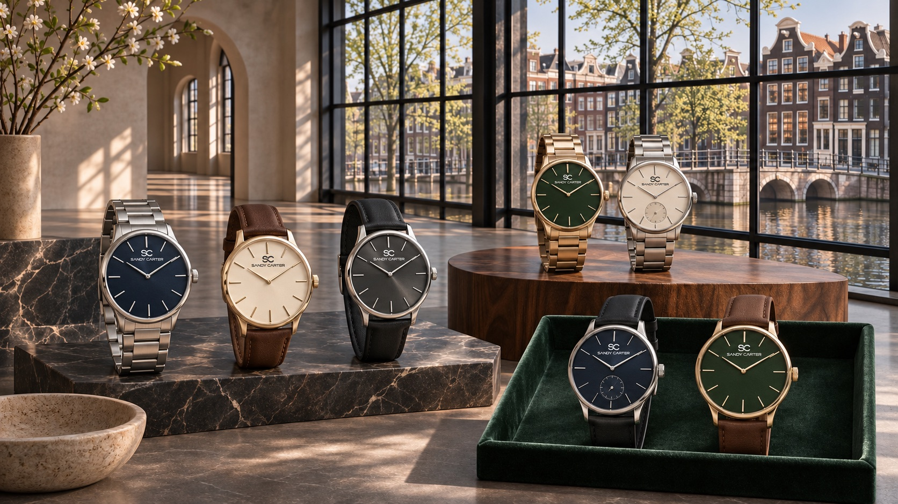

Modern elegance in considered form
A premium watch for women can feel expressive without becoming ornate. SANDY D CARTER explores clean dials, balanced case profiles and colours selected to work naturally with contemporary wardrobes.
The women’s collection direction is informed by Dutch simplicity and wider European design culture. It is intended for women who value design with meaning—pieces that feel distinctive today and remain relevant over time.
Choosing a designer watch for women
Look beyond a single trend. Consider proportion, legibility, comfort and how the watch relates to jewellery and clothing you already wear. Exact case measurements, materials, movement information and warranty terms will accompany every approved model before launch.

Frequently asked questions
What makes a women’s watch feel premium?
Considered proportions, refined finishing, coherent design and verified specifications help define a premium watch.
Will exact dimensions be listed?
Yes. Approved product pages will state case dimensions, materials, movement and warranty before orders open.